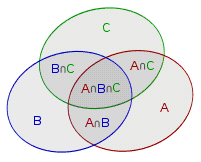

Inclusion exclusion principle
引入
???+ note "入门例题" 假设班里有 $10$ 个学生喜欢数学，$15$ 个学生喜欢语文，$21$ 个学生喜欢编程，班里至少喜欢一门学科的有多少个学生呢？
是 $10+15+21=46$ 个吗？不是的，因为有些学生可能同时喜欢数学和语文，或者语文和编程，甚至还有可能三者都喜欢．
为了叙述方便，我们把喜欢语文、数学、编程的学生集合分别用 $A,B,C$ 表示，则学生总数等于 $|A\cup B\cup C|$．刚才已经讲过，如果把这三个集合的元素个数 $|A|,|B|,|C|$ 直接加起来，会有一些元素重复统计了，因此需要扣掉 $|A\cap B|,|B\cap C|,|C\cap A|$，但这样一来，又有一小部分多扣了，需要加回来，即 $|A\cap B\cap C|$．即
$$ |A\cup B\cup C|=|A|+|B|+|C|-|A\cap B|-|B\cap C|-|C\cap A|+|A\cap B\cap C| $$

把上述问题推广到一般情况，就是我们熟知的容斥原理．
定义
设 U 中元素有 n 种不同的属性，而第 i 种属性称为 $P_i$，拥有属性 $P_i$ 的元素构成集合 $S_i$，那么
$$ \begin{aligned} \left|\bigcup_{i=1}^{n}S_i\right|=&\sum_{i}|S_i|-\sum_{i<j}|S_i\cap S_j|+\sum_{i<j<k}|S_i\cap S_j\cap S_k|-\cdots\ &+(-1)^{m-1}\sum_{a_i<a_{i+1} }\left|\bigcap_{i=1}^{m}S_{a_i}\right|+\cdots+(-1)^{n-1}|S_1\cap\cdots\cap S_n| \end{aligned} $$
即
$$ \left|\bigcup_{i=1}^{n}S_i\right|=\sum_{m=1}^n(-1)^{m-1}\sum_{a_i<a_{i+1} }\left|\bigcap_{i=1}^mS_{a_i}\right| $$
证明
对于每个元素使用二项式定理计算其出现的次数．对于元素 x，假设它出现在 $T_1,T_2,\cdots,T_m$ 的集合中，那么它的出现次数为
$$ \begin{aligned} Cnt=&|{T_i}|-|{T_i\cap T_j|i<j}|+\cdots+(-1)^{k-1}\left|\left{\bigcap_{i=1}^{k}T_{a_i}|a_i<a_{i+1}\right}\right|\ &+\cdots+(-1)^{m-1}|{T_1\cap\cdots\cap T_m}|\ =&\dbinom{m}{1}-\dbinom{m}{2}+\cdots+(-1)^{m-1}\dbinom{m}{m}\ =&\dbinom{m}{0}-\sum_{i=0}^m(-1)^i\dbinom{m}{i}\ =&1-(1-1)^m=1 \end{aligned} $$
于是每个元素出现的次数为 1，那么合并起来就是并集．证毕．
补集
对于全集 U 下的 集合的并 可以使用容斥原理计算，而集合的交则用全集减去 补集的并集 求得：
$$ \left|\bigcap_{i=1}^{n}S_i\right|=|U|-\left|\bigcup_{i=1}^n\overline{S_i}\right| $$
右边使用容斥即可．
可能接触过容斥的读者都清楚上述内容，而更关心的是容斥的应用．
那么接下来我们给出 3 个层次不同的例题来为大家展示容斥原理的应用．
不定方程非负整数解计数
???+ note "不定方程非负整数解计数" 给出不定方程 $\sum_{i=1}^nx_i=m$ 和 $n$ 个限制条件 $x_i\leq b_i$，其中 $m,b_i \in \mathbb{N}$. 求方程的非负整数解的个数．
没有限制时
如果没有 $x_i\leq b_i$ 的限制，那么不定方程 $\sum_{i=1}^nx_i=m$ 的非负整数解的数目为 $\dbinom{m+n-1}{n-1}$.
略证：插板法．
相当于你有 $m$ 个球要分给 $n$ 个盒子，允许某个盒子是空的．这个问题不能直接用组合数解决．
于是我们再加入 $n-1$ 个球，于是问题就变成了在一个长度为 $m+n-1$ 的球序列中选择 $n-1$ 个球，然后这个 $n-1$ 个球把这个序列隔成了 $n$ 份，恰好可以一一对应放到 $n$ 个盒子中．那么在 $m+n-1$ 个球中选择 $n-1$ 个球的方案数就是 $\dbinom{m+n-1}{n-1}$．
容斥模型
接着我们尝试抽象出容斥原理的模型：
- 全集 U：不定方程 $\sum_{i=1}^nx_i=m$ 的非负整数解
- 元素：变量 $x_i$.
- 属性：$x_i$ 的属性即 $x_i$ 满足的条件，即 $x_i\leq b_i$ 的条件
目标：所有变量满足对应属性时集合的大小，即 $|\bigcap_{i=1}^nS_i|$.
这个东西可以用 $\left|\bigcap_{i=1}^{n}S_i\right|=|U|-\left|\bigcup_{i=1}^n\overline{S_i}\right|$ 求解．$|U|$ 可以用组合数计算，后半部分自然使用容斥原理展开．
那么问题变成，对于一些 $\overline{S_{a_i}}$ 的交集求大小．考虑 $\overline{S_{a_i} }$ 的含义，表示 $x_{a_i}\geq b_{a_i}+1$ 的解的数目．而交集表示同时满足这些条件．因此这个交集对应的不定方程中，有些变量有 下界限制，而有些则没有限制．
能否消除这些下界限制呢？既然要求的是非负整数解，而有些变量的下界又大于 $0$，那么我们直接 把这个下界减掉，就可以使得这些变量的下界变成 $0$，即没有下界啦．因此对于
$$ \left|\bigcap_{a_i<a_{i+1} }^{1\leq i\leq k}S_{a_i}\right| $$
的不定方程形式为
$$ \sum_{i=1}^nx_i=m-\sum_{i=1}^k(b_{a_i}+1) $$
于是这个也可以组合数计算啦．这个长度为 $k$ 的 $a$ 数组相当于在枚举子集．
HAOI2008 硬币购物
???+ note "HAOI2008 硬币购物" 4 种面值的硬币，第 i 种的面值是 $C_i$．$n$ 次询问，每次询问给出每种硬币的数量 $D_i$ 和一个价格 $S$，问付款方式．
$n\leq 10^3,S\leq 10^5$.
如果用背包做的话复杂度是 $O(4nS)$，无法承受．这道题最明显的特点就是硬币一共只有四种．抽象模型，其实就是让我们求方程 $\sum_{i=1}^4C_ix_i=S,x_i\leq D_i$ 的非负整数解的个数．
采用同样的容斥方式，$x_i$ 的属性为 $x_i\leq D_i$. 套用容斥原理的公式，最后我们要求解
$$ \sum_{i=1}^4C_ix_i=S-\sum_{i=1}^kC_{a_i}(D_{a_i}+1) $$
也就是无限背包问题．这个问题可以预处理，算上询问，总复杂度 $O(4S+2^4n)$．
??? note "代码实现"
cpp
--8<-- "docs/math/code/inclusion-exclusion-principle/inclusion-exclusion-principle_1.cpp"
完全图子图染色问题
前面的三道题都是容斥原理的正向运用，这道题则需要用到容斥原理逆向分析．
???+ note "完全图子图染色问题" A 和 B 喜欢对图（不一定连通）进行染色，而他们的规则是，相邻的结点必须染同一种颜色．今天 A 和 B 玩游戏，对于 $n$ 阶 完全图 $G=(V,E)$．他们定义一个估价函数 $F(S)$，其中 S 是边集，$S\subseteq E$.$F(S)$ 的值是对图 $G'=(V,S)$ 用 $m$ 种颜色染色的总方案数．他们的另一个规则是，如果 $|S|$ 是奇数，那么 A 的得分增加 $F(S)$，否则 B 的得分增加 $F(S)$. 问 A 和 B 的得分差值．
数学形式
一看这道题的算法趋向并不明显，因此对于棘手的题目首先抽象出数学形式．得分差即为奇偶对称差，可以用 -1 的幂次来作为系数．我们求的是
$$ Ans=\sum_{S\subseteq E}(-1)^{|S|-1}F(S) $$
容斥模型
相邻结点染同一种颜色，我们把它当作属性．在这里我们先不遵守染色的规则，假定我们用 m 种颜色直接对图染色．对于图 $G'=(V,S)$，我们把它当作 元素．属性 $x_i=x_j$ 的含义是结点 i,j 染同色（注意，并未要求 i,j 之间有连边）．
而属性 $x_i=x_j$ 对应的 集合 定义为 $Q_{i,j}$，其含义是所有满足该属性的图 $G'$ 的染色方案，集合的大小就是满足该属性的染色方案数，集合内的元素相当于所有满足该属性的图 $G'$ 的染色图．
回到题目，「相邻的结点必须染同一种颜色」，可以理解为若干个 $Q$ 集合的交集．因此可以写出
$$ F(S)=\left|\bigcap_{(i,j)\in S}Q_{i,j}\right| $$
上述式子右边的含义就是说对于 S 内的每一条边 $(i,j)$ 都满足 $x_i=x_j$ 的染色方案数，也就是 $F(S)$.
是不是很有容斥的味道了？由于容斥原理本身没有二元组的形式，因此我们把 所有 的边 $(i,j)$ 映射到 $T=\frac{n(n+1)}{2}$ 个整数上，假设将 $(i,j)$ 映射为 $k,1\leq k\leq T$，同时 $Q_{i,j}$ 映射为 $Q_k$. 那么属性 $x_i=x_j$ 则定义为 $P_k$.
同时 S 可以表示为若干个 k 组成的集合，即 $S\iff K={k_1,k_2,\cdots,k_m}$.（也就是说我们在边集与数集间建立了等价关系）．
而 E 对应集合 $M=\left{1,2,\cdots,\frac{n(n+1)}{2}\right}$. 于是乎
$$ F(S)\iff F({ {k_i}})=\left|\bigcap_{k_i}Q_{k_i}\right| $$
逆向分析
那么要求的式子展开
$$ \begin{aligned} Ans &= \sum_{K\subseteq M}(-1)^{|K|-1}\left|\bigcap_{k_i\in K}Q_{k_i}\right|\ &= \sum_{i}|Q_i|-\sum_{i<j}|Q_i\cap Q_j|+\sum_{i<j<k}|Q_i\cap Q_j\cap Q_k|-\cdots+(-1)^{T-1}\left|\bigcap_{i=1}^TQ_i\right| \end{aligned} $$
于是就出现了容斥原理的展开形式，因此对这个式子逆向推导
$$ Ans=\left|\bigcup_{i=1}^TQ_i\right| $$
再考虑等式右边的含义，只要满足 $1\sim T$ 任一条件即可，也就是存在两个点同色（不一定相邻）的染色方案数！而我们知道染色方案的全集是 $U$，显然 $|U|=m^n$. 而转化为补集，就是求两两异色的染色方案数，即 $A_m^n=\frac{m!}{(m-n)!}$. 因此
$$ Ans=m^n-A_m^n $$
解决这道题，我们首先抽象出题目数学形式，然后从题目中信息量最大的条件，$F(S)$ 函数的定义入手，将其转化为集合的交并补．然后将式子转化为容斥原理的形式，并 逆向推导 出最终的结果．这道题体现的正是容斥原理的逆用．
数论中的容斥
使用容斥原理能够巧妙地求解一些数论问题．
容斥原理求最大公约数为 k 的数对个数
考虑下面的问题：
???+ note "求最大公约数为 $k$ 的数对个数" 设 $1 \le x, y \le N$，$f(k)$ 表示最大公约数为 $k$ 的有序数对 $(x, y)$ 的个数，求 $f(1)$ 到 $f(N)$ 的值．
这道题固然可以用欧拉函数或莫比乌斯反演的方法来做，但是都不如用容斥原理来的简单．
由容斥原理可以得知，先找到所有以 $k$ 为 公约数 的数对，再从中剔除所有以 $k$ 的倍数为 公约数 的数对，余下的数对就是以 $k$ 为 最大公约数 的数对．即 $f(k)=$ 以 $k$ 为 公约数 的数对个数 $-$ 以 $k$ 的倍数为 公约数 的数对个数．
进一步可发现，以 $k$ 的倍数为 公约数 的数对个数等于所有以 $k$ 的倍数为 最大公约数 的数对个数之和．于是，可以写出如下表达式：
$$ f(k)= \lfloor (N/k) \rfloor ^2 - \sum_{i=2}^{ik \le N} f(ik) $$
由于当 $k>N/2$ 时，我们可以直接算出 $f(k)= \lfloor (N/k) \rfloor ^2$，因此我们可以倒过来，从 $f(N)$ 算到 $f(1)$ 就可以了．于是，我们使用容斥原理完成了本题．
for (long long k = N; k >= 1; k--) {
f[k] = (N / k) * (N / k);
for (long long i = k + k; i <= N; i += k) f[k] -= f[i];
}
上述方法的时间复杂度为 $O( \sum_{i=1}^{N} N/i)=O(N \sum_{i=1}^{N} 1/i)=O(N \log N)$．
附赠三倍经验供大家练手．
容斥原理推导欧拉函数
考虑下面的问题：
???+ note "欧拉函数公式" 求欧拉函数 $\varphi(n)$．其中 $\varphi(n)=|{1\leq x\leq n|\gcd(x,n)=1}|$．
直接计算是 $O(n\log n)$ 的，用线性筛是 $O(n)$ 的，杜教筛是 $O(n^{\frac{2}{3}})$ 的（话说一道数论入门题用容斥做为什么还要扯到杜教筛上），接下来考虑用容斥推出欧拉函数的公式
判断两个数是否互质，首先分解质因数
$$ n=\prod_{i=1}^k{p_i}^{c_i} $$
那么就要求对于任意 $p_i$，$x$ 都不是 $p_i$ 的倍数，即 $p_i\nmid x$. 把它当作属性，对应的集合为 $S_i$，因此有
$$ \varphi(n)=\left|\bigcap_{i=1}^kS_i\right|=|U|-\left|\bigcup_{i=1}^k\overline{S_i}\right| $$
全集大小 $|U|=n$，而 $\overline{S_i}$ 表示的是 $p_i\mid x$ 构成的集合，显然 $|\overline{S_i}|=\frac{n}{p_i}$，并由此推出
$$ \left|\bigcap_{a_i<a_{i+1}}S_{a_i}\right|=\frac{n}{\prod p_{a_i}} $$
因此可得
$$ \begin{aligned} \varphi(n)&=n-\sum_{i}\frac{n}{p_i}+\sum_{i<j}\frac{n}{p_ip_j}-\cdots+(-1)^k\frac{n}{p_1p_2 \cdots p_k}\ &=n\left(1-\frac{1}{p_1}\right)\left(1-\frac{1}{p_2}\right)\cdots\left(1-\frac{1}{p_k}\right)\ &=n\prod_{i=1}^k\left(1-\frac{1}{p_i}\right) \end{aligned} $$
这就是欧拉函数的数学表示啦
容斥原理一般化
容斥原理常用于集合的计数问题，而对于两个集合的函数 $f(S),g(S)$，若
$$ f(S)=\sum_{T\subseteq S}g(T) $$
那么就有
$$ g(S)=\sum_{T\subseteq S}(-1)^{|S|-|T|}f(T) $$
证明
接下来我们简单证明一下．我们从等式的右边开始推：
$$ \begin{aligned} &\sum_{T\subseteq S}(-1)^{|S|-|T|}f(T)\ =&\sum_{T\subseteq S}(-1)^{|S|-|T|}\sum_{Q\subseteq T}g(Q)\ =&\sum_{Q}g(Q)\sum_{Q\subseteq T\subseteq S}(-1)^{|S|-|T|}\ \end{aligned} $$
我们发现后半部分的求和与 $Q$ 无关，因此把后半部分的 $Q$ 剔除：
$$ =\sum_{Q}g(Q)\sum_{T\subseteq (S\setminus Q)}(-1)^{|S\setminus Q|-|T|} $$
记关于集合 $P$ 的函数 $F(P)=\sum_{T\subseteq P}(-1)^{|P|-|T|}$，并化简这个函数：
$$ \begin{aligned} F(P)&=\sum_{T\subseteq P}(-1)^{|P|-|T|}\ &=\sum_{i=0}^{|P|}\dbinom{|P|}{i}(-1)^{|P|-i}=\sum_{i=0}^{|P|}\dbinom{|P|}{i}1^i(-1)^{|P|-i}\ &=(1-1)^{|P|}=0^{|P|} \end{aligned} $$
因此原来的式子的值是
$$ \sum_{Q}g(Q)\sum_{T\subseteq (S\setminus Q)}(-1)^{|S\setminus Q|-|T|}=\sum_{Q}g(Q)F(S\setminus Q)=\sum_{Q}g(Q)\cdot 0^{|S\setminus Q|} $$
分析发现，仅当 $|S\setminus Q|=0$ 时有 $0^0=1$，这时 $Q=S$，对答案的贡献就是 $g(S)$，其他时侯 $0^{|S\setminus Q|}=0$，则对答案无贡献．于是得到
$$ \sum_{Q}g(Q)\cdot 0^{|S\setminus Q|}=g(S) $$
综上所述，得证．
推论
该形式还有这样一个推论．在全集 $U$ 下，对于函数 $f(S),g(S)$，如果
$$ f(S)=\sum_{S\subseteq T}g(T) $$
那么
$$ g(S)=\sum_{S\subseteq T}(-1)^{|T|-|S|}f(T) $$
这个推论其实就是补集形式，证法类似．
DAG 计数
???+ note "DAG 计数" 对 $n$ 个点带标号的有向无环图进行计数，对 $10^9+7$ 取模．$n\leq 5\times 10^3$．
直接 DP
考虑 DP，定义 $f[i,j]$ 表示 $i$ 个点的 DAG，有 $j$ 点个入度为 $0$ 的图的个数．假设去掉这 $j$ 个点后，有 $k$ 个点入度为 $0$，那么在去掉前这 $k$ 个点至少与这 $j$ 个点中的某几个有连边，即 $2^j-1$ 种情况；而这 $j$ 个点除了与 $k$ 个点连边，还可以与剩下的点任意连边，有 $2^{i-j-k}$ 种情况．因此方程如下：
$$ f[i,j]=\binom{i}{j}\sum_{k=1}^{i-j}(2^j-1)^k2^{(i-j-k)j}f[i-j,k] $$
计算上式的复杂度是 $O(n^3)$ 的．
放宽限制
上述 DP 的定义是恰好 $j$ 个点入度为 $0$, 太过于严格，可以放宽为至少 $j$ 个点入度为 $0$．直接定义 $f[i]$ 表示 $i$ 个点的 DAG 个数．可以直接容斥．考虑选出的 $j$ 个点，这 $j$ 个点可以和剩下的 $i-j$ 个点有任意的连边，即 $\left(2^{i-j}\right)^j=2^{(i-j)j}$ 种情况：
$$ f[i]=\sum_{j=1}^i(-1)^{j-1}\binom{i}{j}2^{(i-j)j}f[i-j] $$
计算上式的复杂度是 $O(n^2)$ 的．
Min-max 容斥
对于满足 全序 关系并且其中元素满足可加减性的序列 ${x_i}$，设其长度为 $n$，并设 $S={1,2,3,\cdots,n}$，则有：
$$ \max_{i\in S}{x_i}=\sum_{T\subseteq S}{(-1)^{|T|-1}\min_{j\in T}{x_j}} $$
$$ \min_{i\in S}{x_i}=\sum_{T\subseteq S}{(-1)^{|T|-1}\max_{j\in T}{x_j}} $$
证明： 考虑做一个到一般容斥原理的映射．对于 $x\in S$，假设 $x$ 是第 $k$ 小的元素．那么我们定义一个映射 $f:x\mapsto {1,2,\cdots,k}$．显然这是一个双射．
那么容易发现，对于 $x,y\in S$，$f(\min(x,y))=f(x)\cap f(y)$，$f(\max(x,y))=f(x)\cup f(y)$．因此我们得到：
$$ \begin{aligned} \left|f\left(\max_{i\in S}{x_i}\right)\right| &= \left| \bigcup_{i\in S} f(x_i) \right|\ &= \sum_{T\subseteq S}(-1)^{|T|-1} \left|\bigcap_{j\in T}f(x_j)\right|\ &= \sum_{T\subseteq S}(-1)^{|T|-1} \left|f\left(\min_{j\in T}{x_j}\right)\right|\ \end{aligned} $$
然后再把 $\left|f\left(\max_{i\in S}{x_i}\right)\right|$ 映射回 $\max_{i\in S}{x_i}$，而 $\min$ 是类似的．
证毕．
但是你可能觉得这个式子非常蠢，最大值明明可以直接求．之所以 min-max 容斥这么重要，是因为它在期望上也是成立的，即：
$$ E\left(\max_{i\in S}{x_i}\right)=\sum_{T\subseteq S}{(-1)^{|T|-1}E\left(\min_{j\in T}{x_j} \right)} $$
$$ E\left(\min_{i\in S}{x_i}\right)=\sum_{T\subseteq S}{(-1)^{|T|-1}E\left(\max_{j\in T}{x_j} \right)} $$
证明： 我们考虑计算期望的一种方法：
$$ E\left(\max_{i\in S}{x_i}\right)=\sum_{y}{P(y=x)\max_{j\in S}{y_j}} $$
其中 $y$ 是一个长度为 $n$ 的序列．
我们对后面的 $\max$ 使用之前的式子：
$$ \begin{aligned}E\left(\max_{i\in S}{x_i}\right)&=\sum_{y}{P(y=x)\max_{j\in S}{y_j}}\ &=\sum_{y}{P(y=x)\sum_{T\subseteq S}{(-1)^{|T|-1}\min_{j\in T}{y_j}}} \end{aligned} $$
调换求和顺序：
$$ \begin{aligned}E\left(\max_{i\in S}{x_i}\right) &=\sum_{y}{P(y=x)\sum_{T\subseteq S}{(-1)^{|T|-1}\min_{j\in T}{y_j}}}\ &=\sum_{T\subseteq S}{(-1)^{|T|-1}\sum_y{P(y=x)\min_{j\in T}{y_j}}}\ &=\sum_{T\subseteq S}{(-1)^{|T|-1}E\left(\min_{j\in T}{y_j}\right)} \end{aligned} $$
$\min$ 是类似的．
证毕．
还有更强的：
$$ \underset{i\in S}{\operatorname{kthmax}{x_i}}=\sum_{T\subseteq S}{(-1)^{|T|-k}\dbinom {|T|-1}{k-1}\min_{j\in T}{x_j}} $$
$$ \underset{i\in S}{\operatorname{kthmin}{x_i}}=\sum_{T\subseteq S}{(-1)^{|T|-k}\dbinom {|T|-1}{k-1}\max_{j\in T}{x_j}} $$
$$ E\left(\underset{i\in S}{\operatorname{kthmax}{x_i}}\right)=\sum_{T\subseteq S}{(-1)^{|T|-k}\dbinom {|T|-1}{k-1}E\left(\min_{j\in T}{x_j}\right)} $$
$$ E\left(\underset{i\in S}{\operatorname{kthmin}{x_i}}\right)=\sum_{T\subseteq S}{(-1)^{|T|-k}\dbinom {|T|-1}{k-1}E\left(\max_{j\in T}{x_j}\right)} $$
规定若 $n< m$，则 $\dbinom nm=0$．
证明： 不妨设 $\forall 1\le i<n,x_i\le x_{i+1}$．则有：
$$ \begin{aligned} \sum_{T\subseteq S}{(-1)^{|T|-k}\dbinom {|T|-1}{k-1}\min_{j\in T}{x_j}} &=\sum_{i\in S}{x_i\sum_{T\subseteq S}{(-1)^{|T|-k}\dbinom {|T|-1}{k-1}\left[x_i=\min_{j\in T}{x_j} \right]}}\ &=\sum_{i\in S}{x_i\sum_{j=k}^n{\dbinom {n-i}{j-1}\dbinom {j-1}{k-1}(-1)^{j-k}}} \end{aligned} $$
又因为有组合恒等式：$\dbinom ab\dbinom bc=\dbinom ac\dbinom {a-c}{b-c}$，所以有：
$$ \begin{aligned} \sum_{T\subseteq S}{(-1)^{|T|-k}\dbinom {|T|-1}{k-1}\min_{j\in T}{x_j}} &=\sum_{i\in S}{x_i\sum_{j=k}^n{\dbinom {n-i}{j-1}\dbinom {j-1}{k-1}(-1)^{j-k}}}\ &=\sum_{i\in S}{x_i\sum_{j=k}^n{\dbinom {n-i}{k-1}\dbinom {n-i-k+1}{j-k}(-1)^{j-k}}}\ &=\sum_{i\in S}{\dbinom {n-i}{k-1}x_i\sum_{j=k}^n{\dbinom {n-i-k+1}{j-k}(-1)^{j-k}}}\ &=\sum_{i\in S}{\dbinom {n-i}{k-1}x_i\sum_{j=0}^{n-i-k+1}{\dbinom {n-i-k+1}j(-1)^{j}}} \end{aligned} $$
当 $i=n-k+1$ 时：
$$ \dbinom {n-i}{k-1}\sum_{j=0}^{n-i-k+1}{\dbinom {n-i-k+1}j(-1)^{j}}=1 $$
否则：
$$ \dbinom {n-i}{k-1}\sum_{j=0}^{n-i-k+1}{\dbinom {n-i-k+1}j(-1)^{j}}=0 $$
所以：
$$ \sum_{i\in S}{\dbinom {n-i}{k-1}x_i\sum_{j=0}^{n-i-k+1}{\dbinom {n-i-k+1}j(-1)^{j}}}=\underset{i\in S}{\operatorname{kthmax}}{x_i} $$
剩下三个是类似的．
证毕．
根据 min-max 容斥，我们还可以得到下面的式子：
$$ \underset{i\in S}{\operatorname{lcm}}{x_i}=\prod_{T\subseteq S}{\left(\gcd_{j\in T}{x_j} \right)^{(-1)^{|T|-1}}} $$
因为 $\operatorname{lcm},\gcd,a^{1},a^{-1}$ 分别相当于 $\max,\min,+,-$，就是说相当于对于指数做了一个 min-max 容斥，自然就是对的了
PKUWC2018 随机游走
???+ note "PKUWC2018 随机游走" 给定一棵 $n$ 个点的树，你从 $x$ 出发，每次等概率随机选择一条与所在点相邻的边走过去．
有 $Q$ 次询问．每次询问给出一个集合 $S$，求如果从 $x$ 出发一直随机游走，直到点集 $S$ 中的点都至少经过一次的话，期望游走几步．
特别地，点 $x$（即起点）视为一开始就被经过了一次．
对 $998244353$ 取模．
$1\le n\le 18,1\le Q\le 5000,1\le |S|\le n$．
期望游走的步数也就是游走的时间．那么设随机变量 $x_i$ 表示第一次走到结点 $i$ 的时间．那么我们要求的就是
$$ E\left(\max_{i\in S}x_i\right) $$
使用 min-max 容斥可以得到
$$ E\left(\max_{i\in S}x_i\right) =E\left(\sum_{T\subseteq S}(-1)^{|T|-1}\min_{i\in T}x_i\right) =\sum_{T\subseteq S}(-1)^{|T|-1}E\left(\min_{i\in T}x_i\right) $$
对于一个集合 $T\in[n]$，考虑求出 $F(T)=E(\min_{i\in T}x_i)$．
考虑 $E(\min_{i\in T}x_i)$ 的含义，是第一次走到 $T$ 中某一个点的期望时间．不妨设 $f(i)$ 表示从结点 $i$ 出发，第一次走到 $T$ 中某个结点的期望时间．
- 对于 $i\in T$，有 $f(i)=0$．
- 对于 $i\notin T$，有 $f(i)=1+\frac{1}{\text{deg}(i)}\sum_{(i,j)\in E}f(j)$．
如果直接高斯消元，复杂度 $O(n^3)$．那么我们对每个 $T$ 都计算 $F(T)$ 的总复杂度就是 $O(2^nn^3)$，不能接受．我们使用树上消元的技巧．
不妨设根结点是 $1$，结点 $u$ 的父亲是 $p_u$．对于叶子结点 $i$，$f(i)$ 只会和 $i$ 的父亲有关（也可能 $f(i)=0$，那样更好）．因此我们可以把 $f(i)$ 表示成 $f(i)=A_i+B_if(p_i)$ 的形式，其中 $A_i,B_i$ 可以快速计算．
对于非叶结点 $i$，考虑它的儿子序列 $j_1,\cdots,j_k$．由于 $f(j_e)=A_{j_e}+B_{j_e}f(i)$．因此可以得到
$$ f(i)=1+\frac{1}{\deg(i)}\sum_{e=1}^k\left(A_{j_e}+B_{j_e}f(i)\right)+\frac{f(p_i)}{\deg(i)} $$
那么变换一下可以得到
$$ f(i)=\frac{\deg(i)+\sum_{e=1}^kA_{j_e}}{\deg(i)-\sum_{e=1}^kB_{j_e}}+ \frac{f(p_i)}{\deg(i)-\sum_{e=1}^kB_{j_e}} $$
于是我们把 $f(i)$ 也写成了 $A_i+B_if(p_i)$ 的形式．这样可以一直倒推到根结点．而根结点没有父亲．也就是说
$$ f(1)=\frac{\deg(1)+\sum_{e=1}^kA_{j_e}}{\deg(1)-\sum_{e=1}^kB_{j_e}} $$
解一下这个方程我们就得到了 $f(1)$，再从上往下推一次就得到了每个点的 $f(i)$．那么 $F(T)=f(x)$．时间复杂度 $O(n)$．
这样，我们可以对于每一个 $T$ 计算出 $F(T)$，时间复杂度 $O(2^nn)$．
回到容斥的部分，我们知道 $E(\max_{i\in S}x_i)=\sum_{T\subseteq S}(-1)^{|T|-1}F(T)$．
不妨设 $F'(T)=(-1)^{|T|-1}F(T)$，那么进一步得到 $E(\max_{i\in S}x_i)=\sum_{T\subseteq S}F'(T)$．因此可以使用 FMT（也叫子集前缀和，或者 FWT 或变换）在 $O(2^nn)$ 的时间内对每个 $S$ 计算出 $E(\max_{i\in S}x_i)$，这样就可以 $O(1)$ 回答询问了．
习题
参考文献
浅探容斥原理 - 王迪，2013 年信息学奥林匹克中国国家队候选队员论文集